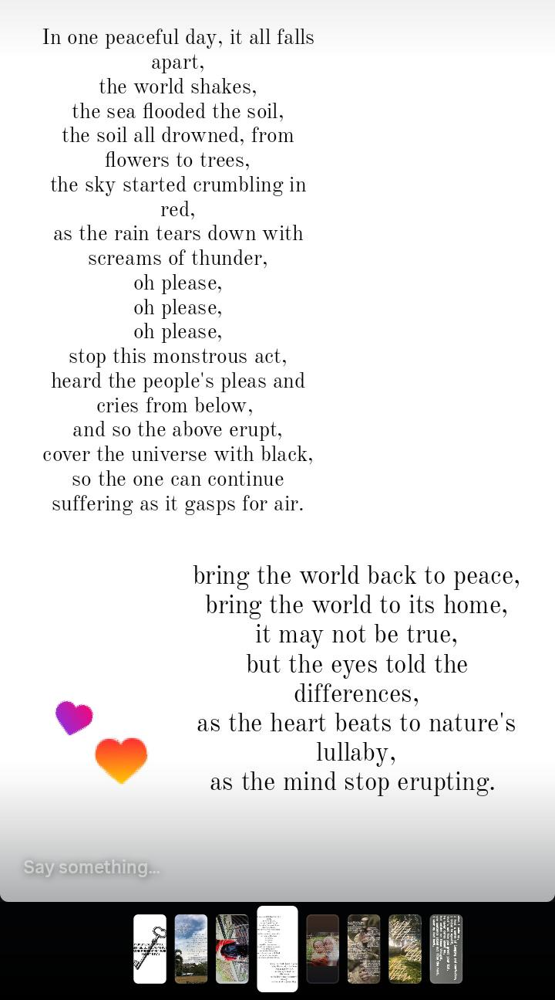
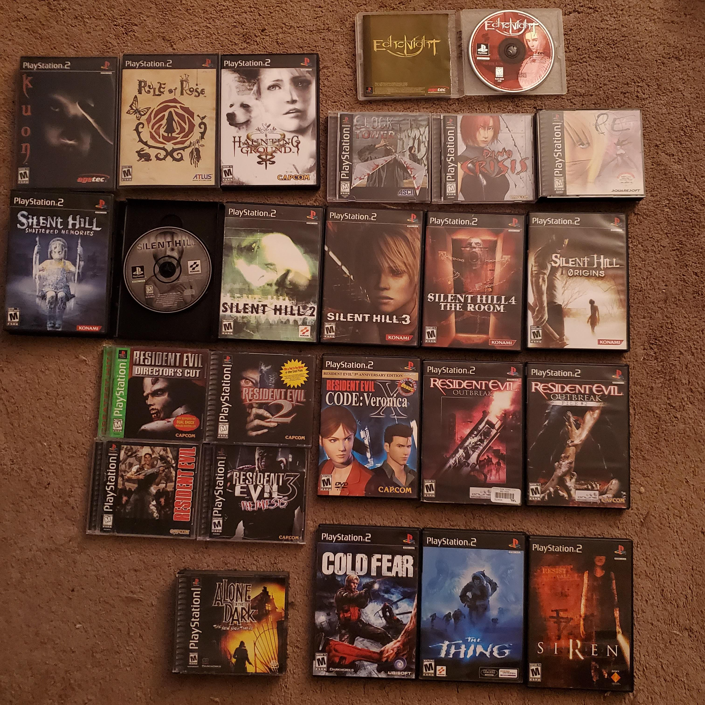

poetry |
 |
the reason why i do poetry is because it makes confessing everything i want to say a lot easier |
my inspiration to do poetry is came from my lowest points in life where i prefer to isolate myself from people |
poetry affected me so much because it helps me to talk my feelings more clearly and just let my imagination turn into |
my fav poet is Mahmoud Darwisy, Palestianian poet and author |
game |
 |
it helps me to understand created in-depth lore of the stories whether it's created by the player or coded by the game itself |
i used to watch youtube videos of minecraft scary maps and storytelling of the creator in SMP(server multiplayer) |
Minecraft affected me to do a deeper thinking and rabbit hole digging on certain dark subjects and improves my writing in horror and thriller |
Markiplier>youtube link |